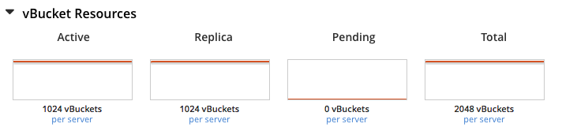

Using Graceful Failover
Graceful failover is used to eject a node containing the Data service from the cluster after all in-flight operations, and data synchronizations are complete.
How does Graceful Failover Work?
Graceful Failover drains the node to be failed over of active vBuckets, one at a time until that node hosts no buckets and no active vBuckets. All in-flight operations to the active vBucket are completed, the corresponding replica vBucket is synchronized by the Cluster Manager to match and then the replicas are promoted to active on the other node. This occurs one bucket and one vBucket at a time, until complete. The final failover actions are taken after the last vBucket promotion occurs. Each promotion happens in a coordinated split-second timeframe. At no time will data be unavailable and the application should not notice that data is missing.
Since synchronization of the active and replica vBuckets is required each time a vBucket is moved, graceful failover by and of itself takes slightly longer to complete than a hard failover. It is fast, but not as much as the hard failover. The performance difference is only noticeable if the cluster is under very high write load or when data replication is slow.
Use Graceful failover only when the following conditions are met; otherwise, use hard failover.
- All nodes in the cluster are healthy (for example, none has failed or is malfunctioning).
- Each bucket in the cluster has all active vBuckets and at least one full set of replica
vBuckets. If not, first fix the problems and rebalance the cluster. For each bucket, look
at the vBucket Resources section of the metrics, then look at the active
and replica vBucket graphs to confirm that each graph has 1024 for that bucket.

For example:
- In a seven-node cluster, if a bucket is configured for one replica, one node can be gracefully failed over.
- In a seven-node cluster, if a bucket is configured for two replicas, two nodes can be gracefully failed over.
- In a seven-node cluster, if a bucket is configured for three replicas, three nodes can be gracefully failed over.
A graceful failover can also be halted mid-process. You can restart a graceful failover that has been paused, in which case the cluster picks up from where it left off previously. If you stop the graceful failover and do not intend to restart it, you must rebalance the cluster. This will generate any replica vBuckets that were promoted as part of the graceful failover process and set the cluster back to where it was, essentially undoing the effects of the graceful failover that you paused.
Understanding when to use Graceful Failover
Graceful failover offers these advantages:
- Maintenance can be completed faster than with a remove and rebalance. If you have a tight maintenance window, you can gracefully failover a node, do your upgrades, changes, patches and so on on that node, and then quickly add it back using Delta Node Recovery to catch up on data where it left off. A use case will be when the security patching on a node is needed or if your cloud provider informs you that you need to restart an instance. Using graceful failover to remove the node and then Delta Node Recovery to add it back when the maintenance is complete is very quick, easy, and fairly non-intrusive.
- Graceful failover is less resource-intensive than hard failover. In a graceful failover scenario, vBuckets simply have their status changed from replica to active. They are not redistributed (copied) to other nodes as they would during a rebalance. There is little increase in network and disk utilization among the nodes of the Data service.
When to use Hard Failover Instead
Hard failover is the corrective action for an unplanned outage of a node that is unhealthy or unstable, whereas graceful failover is meant for planned maintenance. A hard failover ejects the node from the cluster immediately, with no regard for draining of vBuckets from the unhealthy node or vBucket synchronization.
Understand the Risks of Using Graceful Failover
Graceful failover might cause the following:
- Temporary loss of resiliency. By promoting the replica vBuckets to active on the remaining nodes, the cluster does not have the full accompaniment of replica vBuckets necessary for further node failures. So if another node fails after you have gracefully failed over a node, but before you have rebalanced the cluster, you would not have replicas to promote to active as you sacrificed them during the graceful failover.
- Possible temporary loss of performance. Depending on how your cluster is sized and the
workload on the cluster, the replica data may or may not be in the Couchbase’s managed
cache: when under memory pressure, Couchbase Server will eject replica data before active
data.
If the replica data is not already in the managed cache, your replica data resident ratio could be as low as 0% before failover occurs. Once failover occurs, the data in those failed-over vBuckets will take longer to access as they are loaded from disk into the managed cache. In other words, a cache miss occurs. Like any cache miss, it takes more time and resources: more disk access, putting a strain on disk resources, and temporarily reducing performance when accessing this section of the data. The impact is not severe enough so that you have to account for it in cluster sizing, but it is something you need to know about and monitor. You will probably see a higher cache miss ratio in the bucket metrics on the remaining nodes of the cluster for some time after a graceful failover.
A Hypothetical Scenario
Imagine that you have a Couchbase bucket distributed across four nodes of the Data service in a cluster, and you need to remove one node. The system administrator never sent prior notice, and she is telling you the node needs a critical security patch that requires a reboot. Of course, it must be done as soon as possible. You do not have enough time to do a full removal and rebalancing of the node, and then add it back and rebalance again. Graceful failover saves the day!
Under the hood, here’s what happens when you initiate a graceful failover. With a four-node cluster and one replica for each bucket, there are 256 active and 256 replica vBuckets on each of the four nodes, totaling 1024 active and 1024 replica vBuckets. In this particular example, we will only talk about one vBucket, #762, although the same process is repeated for every vBucket on the node to be gracefully failed over:
- Graceful failover is initiated to remove the node where the active vBucket #762 resides, which is node 4. Active vBucket #762 receives writes as normal during this process.
- The Cluster Manager confirms that active vBucket #762 is in sync with replica vBucket #762 that resides on node 2 of the cluster.
- When they are synchronized, the Cluster Manager coordinates a takeover by node 2 of vBucket 762. As part of that, the Cluster Manager promotes replica vBucket 762 to active status on node 2 and dead status on the old vBucket on the failed over node 4. Note that this leaves the cluster with no replica for vBucket 762 until the next rebalance or Delta Node Recovery unless you have more than one replica configured for this bucket.
- As this is a cluster topology change, the cluster map is updated so that the subsequent reads and writes by the Couchbase client SDKs go to the correct location for data in vBucket 762, now node 2.
This process all happens in fractions of a second. The same steps are repeated for the remaining 255 vBuckets of the bucket on this node, one at a time. Likewise, if there is more than one bucket, the same step is repeated on each of them until their vBuckets have all been activated on other nodes, at which time the graceful failover is complete.